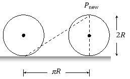

What is distance?
SOLUTION
The length of the path covered in between two points is called distance covered,
Distance is a physical quantity. Also it is a scalar quantity. We need to express only its magnitude not direction.
Its SI unit is m.
Its CGS unit is cm.
SUBJECTIVE QUESTION 16
What is displacement?
SOLUTION
This is a vector quantity. Both magnitude and direction must be expressed.
It is the shortest vector from the initial point to the final point.

PRACTICE QUESTION 1
Figure shows the five houses we discussed earlier. Ram walks to school, but instead of walking straight to school, he decided to walk to his friend Sitaram’s house first to fetch him so that they can walk to school together. What is Ram’s displacement and what distance did he cover?
SOLUTION
To calculate his distance and displacement, we need to choose a reference point and a direction. Let’s choose Ram’s house as the reference point, and towards Sitaram’s house as the positive direction (which means that towards the school is negative). We would do the calculations as follows:
Distance(d)= path travelled = 400 m + 500 m = 900 m
Displacement(∆x) =  = −100 m + 0 m =−100 m
= −100 m + 0 m =−100 m
PRACTICE QUESTION 1
Sitaram walks to school with Ram and after school walks back home. What is Sitaram’s displacement and what distance did he cover?
SOLUTION
For this calculation we use Sitaram’s house as the reference point. Let’s take towards the school as the positive direction.
Distance(d)= path travelled = 500 m + 500 m= 1000 m
Displacement(∆x) =  = 0 m 0 m = 0 m
= 0 m 0 m = 0 m
PRACTICE QUESTION 1
Find the distance and displacement from A to B in each of the case
(a) (b)(c)
SOLUTION
(a) Distance is actual path length = 5 + 2 = 7 m
Displacement is shortest path from A to B = 3 m Right
(b) Distance = 5 + 5 = 10 m
Displacement = 0
(c) Distance = 5 + 7 = 12 m
Displacement is shortest path joining A to B = 2 m Left
PRACTICE QUESTION 1
A particle moves along the circular path AB as shown of radius R. Find the distance travelled and displacement from A to B. O is the center of the circle and A and B are at diametrically opposite points
SOLUTION
Distance is the actual path length = πR units
Displacement is shortest path from A to B which is the straight line AB.
Thus, magnitude of displacement = 2R and along the line AB i.e., horizontal
PRACTICE QUESTION 1
A rock is thrown straight upward from the edge of a 30 m cliff, rising 10 m then falling all the way down to the base of the cliff. Find the rock’s displacement.
SOLUTION
Displacement refers only to the object’s initial position and final position, not the details of its journey. Since the rock started on the edge of the cliff and ended up on the ground 30 m below, its displacement is 30 m downward.
In a track-and-field event, an athlete runs exactly once around an oval track, a total distance of 500 m. Find the runner’s displacement for the race.
SOLUTION
If the runner returns to the same position from which he left, then his displacement is zero.
The total distance covered is 500 m, the displacement is 0
NOTE that distance is not the magnitude of the displacement unless the object has moved in a straight line.
1. On an expedition, you walk 40 m due south and then 30 m due west. Determine how far and in what direction are you from your starting point.
2. If a person walks 1 km north, 5 km west, 3 km south, and 7 km east, find the resultant displacement vector.
3. A body moves over one fourth of a circular arc in a circle of radius r. Find the magnitude of distance travelled and displacement
4. What is the displacement of the point of the wheel initially in contact with the ground, when the wheel roles forward half a revolution will be (radius of the wheel is R)?
5. A man walks 40 m East, then 30 m North. (a). What was the total distance he walked? (b). What is his resultant displacement?
1. You are 50 m in a direction south 37° west from your starting point (i.e. S 37° W).
2. 2.8 km, 45° south of east.
3. ,
4. Hint :

5. The resultant displacement is then 50 m 37° north of east.